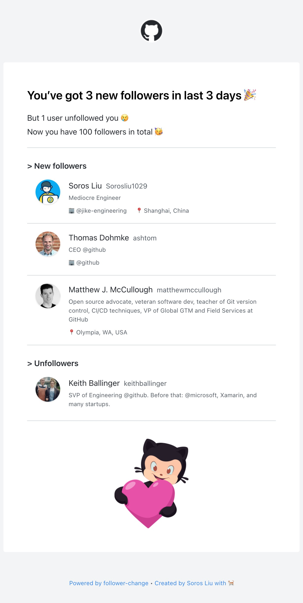

Know who followed — and who left.
A GitHub Action that diffs your followers on a schedule and hands you the change as HTML, Markdown or plain text — ready to email, post or log.
uses: Sorosliu1029/follower-change@v2
How it works
GitHub doesn't send an event when someone follows you, so the Action compares snapshots instead. Each run looks like this:
-
Fetch followers
Reads everyone who follows you now through the GraphQL API.
-
Load last snapshot
Downloads the follower list saved by the previous run.
-
Compare
Works out who is new and who is gone.
-
Save snapshot
Uploads today's list as an artifact for the next run.
It isn't realtime. Run it on a cron — once a day is plenty for most people.
Quick start
Three steps. You can put the workflow in any repository you own — your profile README repo works well.
-
Create a token
Make a personal access token with the
read:userandreposcopes. The Action needsrepoto read the snapshot saved by its previous run. -
Add your secrets
In the repository, go to Settings → Secrets and variables → Actions and add the token as
MY_TOKEN. For the email step below, also addMAIL_USERNAME,MAIL_PASSWORDandTO_EMAIL_ADDRESS. See GitHub's guide to creating repository secrets. -
Add the workflow
This example emails you each morning using action-send-mail. Change
server_addressandserver_portto your mail provider's SMTP server, or swap the step for anything that takes HTML, Markdown or text..github/workflows/follower-notifier.ymlname: follower notifier on: # notify me daily schedule: - cron: '0 3 * * *' # in UTC time # or run it by hand from the Actions tab workflow_dispatch: jobs: main: runs-on: ubuntu-latest steps: - name: get follower change id: followerChange uses: Sorosliu1029/follower-change@v2 with: myToken: ${{ secrets.MY_TOKEN }} notifyUnFollowEvent: true - name: email me uses: dawidd6/action-send-mail@v3 if: steps.followerChange.outputs.shouldNotify == 'true' with: server_address: smtp.qq.com server_port: 465 username: ${{ secrets.MAIL_USERNAME }} password: ${{ secrets.MAIL_PASSWORD }} subject: GitHub Follower Change from: Follower Change Notifier to: ${{ secrets.TO_EMAIL_ADDRESS }} # use html file from previous step as email body html_body: file://${{ steps.followerChange.outputs.htmlFilePath }}
Inputs and outputs
Everything the Action takes and gives back. Read outputs with steps.<id>.outputs.<name>.
Inputs
| Name | Description |
|---|---|
myTokenrequired | Personal access token with read:user and repo scopes. Store it as a secret. |
notifyUnFollowEventdefault false | Also report people who unfollowed you. |
Outputs
| Name | Description |
|---|---|
changed | Whether your followers changed since the last run. |
shouldNotify | Whether to run the next steps: true when you have new followers, or unfollows with notifyUnFollowEvent on. Not set on the first run. |
htmlFilePath | Path to an HTML file describing the change. |
markdown | The change as Markdown. |
plainText | The change as plain text. |
What you receive
The same change, in three formats. Use whichever fits where you want to be told.

The HTML email, designed in follower-change-email.
HTML
htmlFilePathA ready-made email body with avatars, names, bios and locations. Pass it straight to a mail step.
Markdown
markdownGood for opening an issue, updating a README, or posting to chat tools that render Markdown.
Plain text
plainTextFor logs, SMS gateways, or anything that just wants a string.
Questions
Is it realtime?
No. GitHub has no follow event to listen for, so the Action compares two snapshots. You'll hear about changes the next time your cron runs.
Why didn't I get a notification on the first run?
The first run has no earlier snapshot to compare with, so it only saves one and sets no outputs, which skips your notify step. To get that out of the way now, open the workflow in your Actions tab and click Run workflow. After that, every run tells you about changes.
Why does the token need the repo scope?
The previous snapshot is stored as a workflow artifact in your repository. The Action uses the token to find and download it.
Where is my follower data kept?
Only in your own repository, as an Actions artifact. Nothing is sent anywhere else unless you add a step that does it.